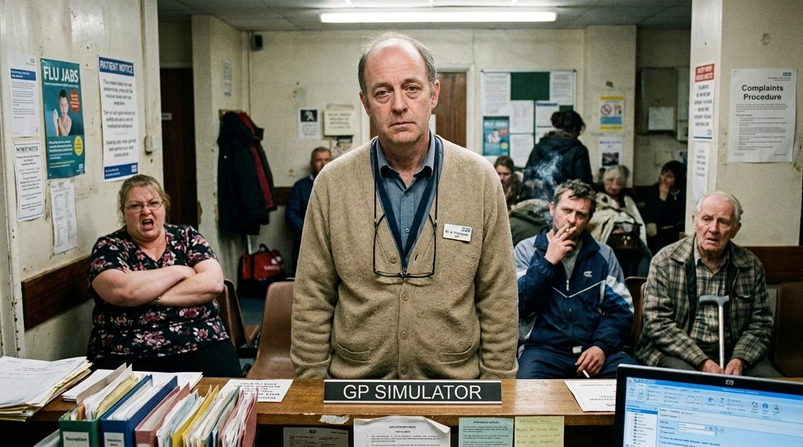

Gamify your learning. Deliver better care.
Your next patient is Margaret Hughes, 58. The booking note says “chest discomfort”. Take a history, examine if you wish, and make your clinical decisions when they arise. Your choices shape the consultation — and your debrief.
Turn your sound on — Margaret talks to you.